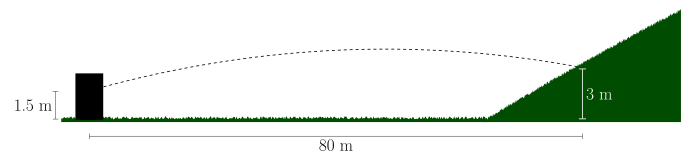

Sample Problem 2-1
A drone is flying in the \({x-y}\) plane. The operator of the drone is located at the origin, \(O\). The motion of the drone is defined by the position vector
\begin{align*}
\vec{r}=\left(2+t^3\right)\hat{i} + \left(2t^2\right)\hat{j}
\end{align*}
where \(\vec{r}\) and \(t\) are expressed in meters and seconds, respectively. Determine (a) the distance between the drone and its operator at \(t=1\), (b) the distance the drone traveled in the interval from \(t=0\) to \(t=1~\)s. (c) the speed and direction of the drone's velocity at \(t=1~\)s. (d) the magnitude of the drone's acceleration at \(t=1~\)s.
Sample Problem 2-2
An archer fires an arrow at a target that is 100 yards away. The target center is 51.2 inches off the ground. The arrow is released at a height of 70 inches from the ground with a speed of 400 fps. What firing angle \(\alpha\), measured with respect to the horizontal, is required to hit the target?
Sample Problem 2-3
Airplane B is traveling at a constant velocity of 800 km/h, and is chasing airplane A, which is traveling northeast at a constant velocity of 560 km/hr. At time \(t=0~\)s, airplane A is 640 km east of airplane B. Determine (a) the direction airplane B should travel (measured from the east) to intercept plane A; (b) how long it takes for airplane \(B\) to catch airplane \(A\); (c) the rate at which the distance between the planes is decreasing.
Practice 2-1
The motion of a particle is defined by the position vector
\begin{align*}
\vec{r}=\left(1+6t^2-4t^3\right)\hat{i} + \left(3+4t\right)\hat{j}
\end{align*}
Determine the velocity and acceleration when (a) \(t=0\) and (b) \(t = 1\).
Practice 2-2
An archer fires an arrow at an angle of 15 degrees above horizontal. The arrow lands on a hillside 80 m away and 3 m high. Determine the initial speed of the arrow in m/s.

Practice 2-3
You are driving at a velocity of 15 mph in the rai. From your perspective in the car you observe the rain falling at an
angle of \(35^\circ\) measured from vertical. Assuming the rain is coming straight down when observed by a stationary person, what is the velocity of the rain with respect to the ground?